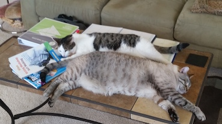

Erin - Bride Extraordininaire
Erin is a cheesehead from Madison, WI. She's very loving, hilarious, and about the only time she raises her voice is when the Packer Defense allows any type of yardage gain. In her spare time, she's a dedicated Middle School ELL Teacher.
Nick - Kitty-Loving Groom
Nick grew up in Aurora, CO. In addition to his kitties, he loves tennis and reading. After a decade as an elementary teacher, Nick is back in school for Front End Software Design.
The Awesome Kitties
Maxie and Big-O are our lovable kitties. They get along swimmingly, even taking turns cleaning themselves!
Click the image to change it!